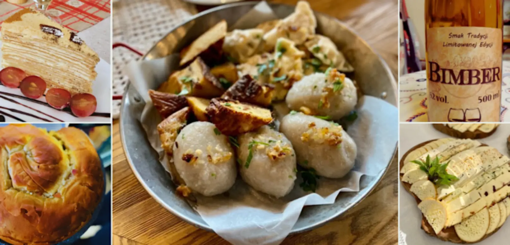

ARTYKUŁ • 23 września 2026
Polska kuchnia regionalna — 10 dań, które musisz spróbować
Kibiny, oscypki, kartacze, rolady — polska kuchnia to nie pierogi i schabowy. To kilkanaście różnych kuchni regionalnych, każda z własną historią. Przewodnik po 10 daniach, od Bałtyku po Bieszczady.

Polska kuchnia bywa niesprawiedliwie sprowadzana do pierogów, schabowego i bigosu. Tymczasem to kilkanaście różnych kuchni regionalnych, z których każda ma własne tradycje, składniki i smaki. Polska leży na przecięciu szlaków handlowych — od Bałtyku po Karpaty, od Niemiec po Ruś — i każde z tych spotkań zostawiło ślad na talerzu. Kuchnia kaszubska pachnie dymem wędzarni, śląska — ciężkim sosem rolady, podlaska — tatarskim pieprzem, podhalańska — owczym serem. Ten przewodnik pokazuje 10 dań, które trzeba spróbować przynajmniej raz w życiu, oraz linkuje do szczegółowych artykułów o każdej z kuchni regionalnych.
Uwaga dla planujących podróże: kuchnia regionalna smakuje tylko tam, gdzie jest częścią codzienności — w małej gospodzie, barze mlecznym, agroturystyce. Nie w restauracji na turystycznym rynku. Wszystkie polecane miejsca w tym przewodniku to lokale, w których kuchnia jest domowa, a nie „na pokaz”.
Kuchnia północna — Bałtyk i jeziora
Północ Polski to kraina ryb — bałtyckich i jeziornych. W kuchni pomorskiej dominują śledzie, flądry, węgorze i wędzone ryby. W kaszubskiej — golce, śledzie i węgorz z jezior. W warmińsko-mazurskiej — sielawa, karp i ryby z mazurskich jezior. To kuchnia prosta, oparta na tym, co dawało morze i jeziora — z wyraźnym wpływem kuchni niemieckiej i skandynawskiej, bo Pomorze przez wieki należało do państwa krzyżackiego, potem do Prus.
Zobacz szczegóły: kuchnia pomorska — ryby, śledzie, golce, szneki z glancem. kuchnia kaszubska — śledzie, węgorze, kaszubski rosół, golce. kuchnia kujawska — pierniki toruńskie, żur, kołocz (Kujawy to pogranicze Pomorza i Wielkopolski).
1. Oscypek (Podhale)
Owczy ser wędzony, formowany w charakterystyczne wrzeciona. Podaje się go z grilla, z żurawiną, prosto od bacy. Smak gór, którego nie da się podrobić. Wpisany na listę produktów chronionych UE — prawdziwy oscypek można kupić tylko na Podhalu. Szczegóły w artykule kuchnia podhalańska.
2. Kwaśnica (Podhale)
Góralska zupa na kapuście kiszonej z mięsem — najczęściej żeberkami lub boczkiem. Rozgrzewa od pierwszego łyka. Idealna po dniu w górach. Je się ją głównie jesienią i zimą, zwłaszcza po powrocie ze szlaku. Szczegóły w artykule kuchnia podhalańska.
Kuchnia wschodnia — pogranicze kultur
Wschód Polski to kuchnia pogranicza — polska, ukraińska, łemkowska, bojkowska, tatarska i żydowska tradycja spotykają się tu na jednym talerzu. To kuchnia prosta, wiejska, oparta na kaszy, ziemniakach, kapuście i grzybach. Puszcza Białowieska daje grzyby, Podlasie — tatarskie kibiny, Podkarpacie — łemkowskie fuczki i proziaki. Wszystko to dania głęboko sycące, tanie i zakorzenione w tradycji.
Zobacz szczegóły: kuchnia podlaska — kibiny, kartacze, babka ziemniaczana, sękacz. kuchnia podkarpacka — proziaki, fuczki, hreczanyki, pstrąg z Sanu. kuchnia lubelska — cebularze, pierogi z bryndzą, pstrąg z Roztocza.
3. Kibiny (Podlasie)
Tatarskie pierożki z mięsem, pieczone lub smażone. Klasyk kuchni podlaskiej, który przetrwał wieki — Tatarzy osiedlili się na Podlasiu już w XIV wieku. Ciasto cienkie, nadzienie mięsne z cebulą. Najlepsze w barach mlecznych w Białymstoku i w Kruszynianach, gdzie do dziś mieszka społeczność tatarska. Szczegóły w artykule kuchnia podlaska.
4. Kartacze (Podlasie)
Wielkie ziemniaczane kluski nadziewane mięsem. Sycące, konkretne, wiejskie. Danie, które pojawia się na każdym weselu w regionie. Kartacze różnią się od zwykłych pyz tym, że są znacznie większe — nawet 8–10 cm — i mają bardziej „mięsny” charakter. Szczegóły w artykule kuchnia podlaska.
5. Cebularz lubelski (Lubelszczyzna)
Płaskie ciasto drożdżowe z cebulą i makiem. Sprzedawany na targach i w piekarniach w całym regionie. Najlepszy na śniadanie, świeżo upieczony, z masłem. Wpisany na listę produktów chronionych UE od 2014 roku. Szczegóły w artykule kuchnia lubelska.
6. Pierogi z bryndzą (Roztocze i Lubelszczyzna)
Delikatne pierogi z owczym serem — specjalność pogranicza polsko-ukraińskiego. Podaje się je ze skwarkami lub śmietaną. Bryndza nadała im charakterystyczny, lekko słony smak. Dziś to jedno z najbardziej rozpoznawalnych dań Lubelszczyzny i Podkarpacia. Szczegóły w artykułach kuchnia lubelska i kuchnia podkarpacka.
7. Proziaki (Łemkowszczyzna i Podkarpacie)
Najprostsze z łemkowskich placków — z mąki, kwaśnego mleka i sody, pieczone na blasze. Podaje się je z masłem czosnkowym, smalcem lub twarogiem. Proste, tanie, głęboko wiejskie — przez wieki były podstawą wyżywienia biedniejszych rodzin wiejskich. Szczegóły w artykule kuchnia podkarpacka.
Kuchnia południowa — góry i Śląsk
Południe Polski to kuchnia góralska i śląska. Na Podhalu — oscypki, kwaśnica, moskole, jagnię. W Małopolsce — obwarzanki, żurek, makowiec, kiełbasa krakowska. Na Śląsku — rolada, kluski śląskie, modra kapusta, kołocz. To kuchnia sycąca, oparta na mięsie, ziemniakach i kapuście, z wyraźnymi wpływami niemieckimi (Śląsk) i wołoskimi (Podhale).
Zobacz szczegóły: kuchnia podhalańska — oscypek, kwaśnica, bryjka, moskole. kuchnia małopolska — obwarzanek, żurek, makowiec, kiełbasa krakowska. kuchnia śląska — rolada, kluski śląskie, modra kapusta, kołocz. co zjeść w Krakowie — 10 dań stolicy Małopolski z konkretnymi miejscami.
8. Rolada śląska (Śląsk)
Wołowina zawijana z boczkiem, cebulą i ogórkiem, podawana z kluskami śląskimi i modrą kapustą. Klasyk kuchni robotniczej. Rolada to danie niedzielne — pracochłonne, wymaga cierpliwości, ale efekt jest wart każdej minuty. Szczegóły w artykule kuchnia śląska.
Kuchnia środkowa i zachodnia — serce Polski
Centrum i zachód Polski to kuchnia miejska i wiejska jednocześnie. W Warszawie i na Mazowszu — flaki, karp po żydowsku, wątróbka drobiowa, kaczka. W Wielkopolsce — pyry z gzikiem, rogale świętomarcińskie, kaczka z jabłkami. Na Dolnym Śląsku — śląskie niebo, kaczka po wrocławsku, kluski, krupnioki. Na Kujawach i Pomorzu — pierniki toruńskie, żur, kołocz. To kuchnia, w której spotykają się wpływy polskie, niemieckie, czeskie i żydowskie.
Zobacz szczegóły: kuchnia mazowiecka — flaki, krupnik, wątróbka, karp po żydowsku. kuchnia dolnośląska — śląskie niebo, kaczka po wrocławsku, kluski, makiełki. kuchnia kujawska — pierniki toruńskie, żur, kołocz, karp.
9. Rogal świętomarciński (Wielkopolska)
Słodki rogal z białym makiem, bakaliami i migdałami. Wypiekany tylko na 11 listopada — w dniu św. Marcina. Chroniony przez UE jako produkt regionalny o chronionej nazwie pochodzenia. Oryginalny rogal ma certyfikat — warto kupować tylko w cukierniach z certyfikatem. Szczegóły w artykule kuchnia kujawska (Poznań i Wielkopolska sąsiadują z Kujawami, regiony się przenikają).
10. Sielawa wędzona (Warmia-Mazury)
Delikatna, tłusta ryba z mazurskich jezior. Wędzona tradycyjnie w przydomowych wędzarniach. Smakuje zupełnie inaczej niż w wersji sklepowej — mięso jest delikatniejsze, bardziej aromatyczne, mniej słone. Sielawa to jeden z symboli kuchni mazurskiej, obok karpia i węgorza. Szczegóły w artykule kuchnia pomorska (ryby wędzone, choć sielawa to specyfika Mazur).
Jak je jeść? Praktyczne wskazówki
Kuchnię regionalną najlepiej jeść w miejscu, z którego pochodzi. W małej gospodzie, barze mlecznym, agroturystyce. Kuchnia regionalna smakuje tylko tam, gdzie jest częścią codzienności, nie atrakcją turystyczną. Oto kilka zasad, które warto zapamiętać:
- Unikaj restauracji na głównych rynkach — są droższe i turystyczne. Zejdź 2 ulice dalej — do barów mlecznych i karczm — tam jedzenie jest tańsze i lepsze.
- Kupuj bezpośrednio od producentów — oscypki w bacówkach, ryby w wędzarniach, chleb na targach, sery u gospodarzy. Cena jest wyższa, ale jakość nieporównywalna.
- Pytaj lokalnych mieszkańców o polecane miejsca — najlepsze bary mleczne i karczmy nie są w przewodnikach.
- Zamawiaj dania sezonowe — kapusta z grzybami jesienią, sielawa zimą, węgorz latem. Kuchnia regionalna jest sezonowa i to część jej uroku.
- Nie próbuj zjeść wszystkiego w jeden weekend — kuchnia regionalna to nie lista do odhaczenia, to sposób podróżowania. Wybierz 2–3 dania na wyjazd.
- Zabierz coś do domu — oscypki, miód, sery, pierniki. Kuchnia regionalna to też pamiątka, która smakuje lepiej niż magnes na lodówkę.
Podsumowanie
Polska kuchnia regionalna to kilkanaście różnych kuchni, z których każda ma własną historię i własne smaki. Od śledzi na Pomorzu, przez kibiny na Podlasiu, po roladę na Śląsku — każdy region ma coś, czego nie znajdziesz nigdzie indziej. Warto zaplanować wyjazd po Polsce tak, żeby spróbować przynajmniej kilku dań regionalnych — najlepiej w miejscach, gdzie kuchnia jest wciąż domowa, a nie turystyczna. Jeśli interesuje cię konkretny region, sprawdź nasze szczegółowe przewodniki po kuchniach: pomorskiej, kaszubskiej, podlaskiej, podkarpackiej, lubelskiej, małopolskiej, podhalańskiej, śląskiej, mazowieckiej, dolnośląskiej, kujawskiej. A jeśli szukasz konkretnego miasta — zobacz co zjeść w Krakowie.